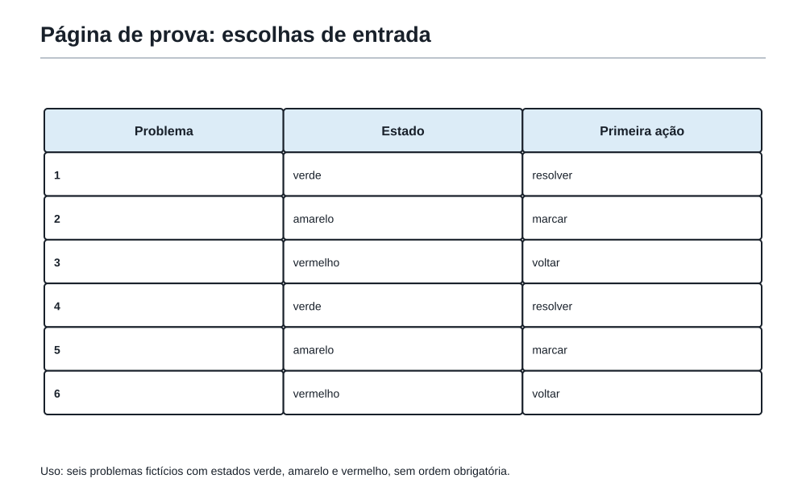
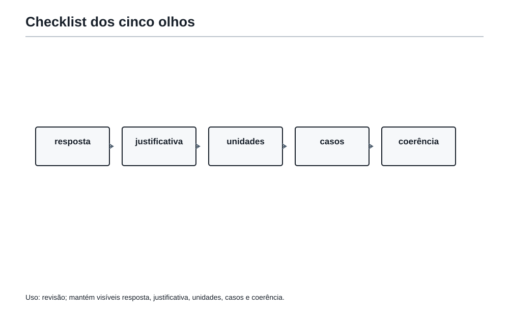
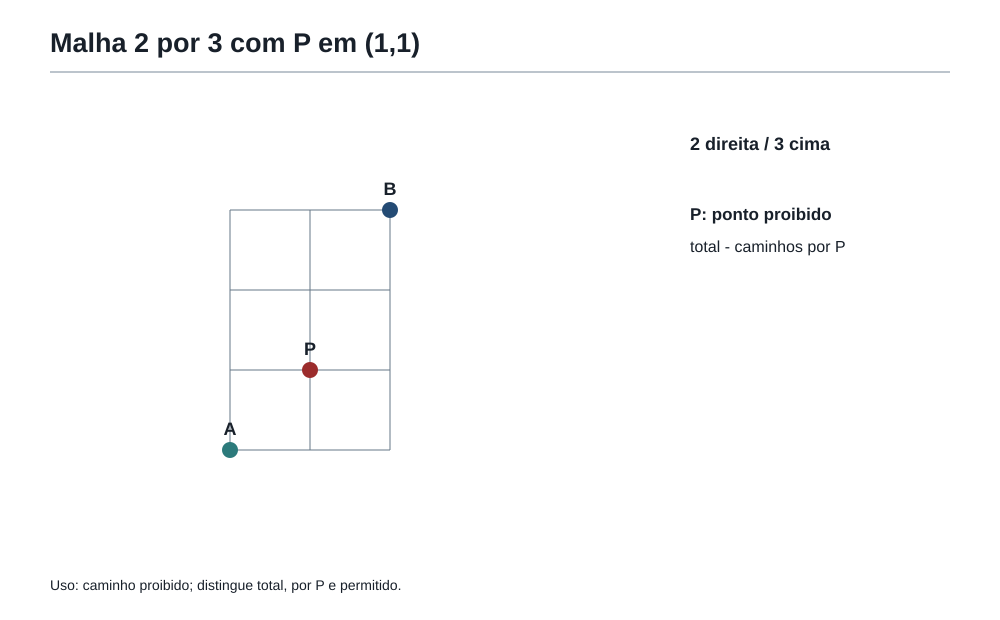
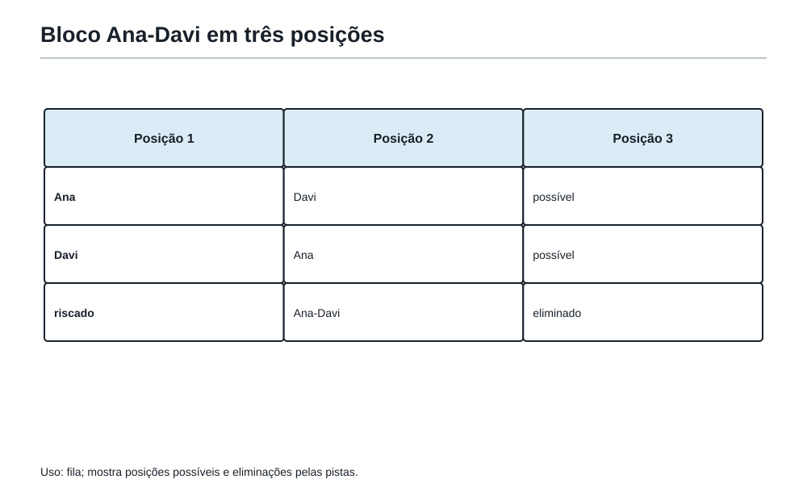
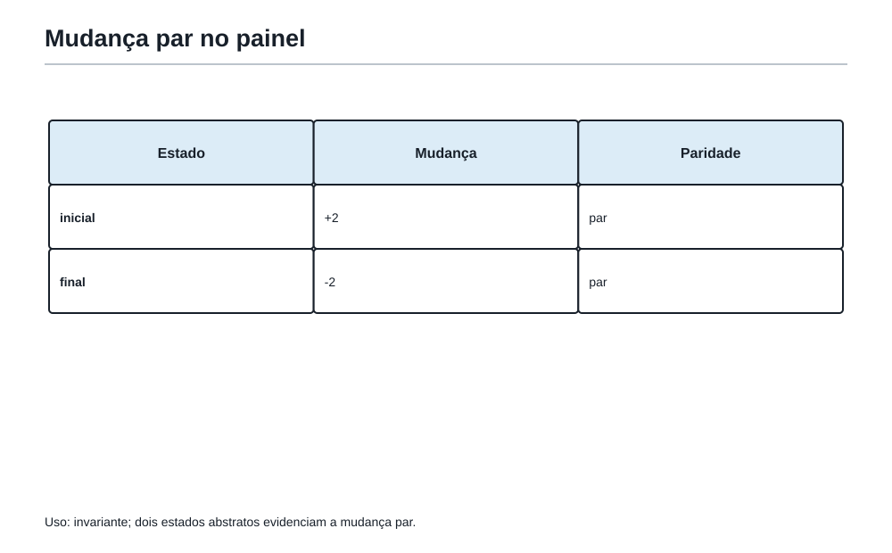
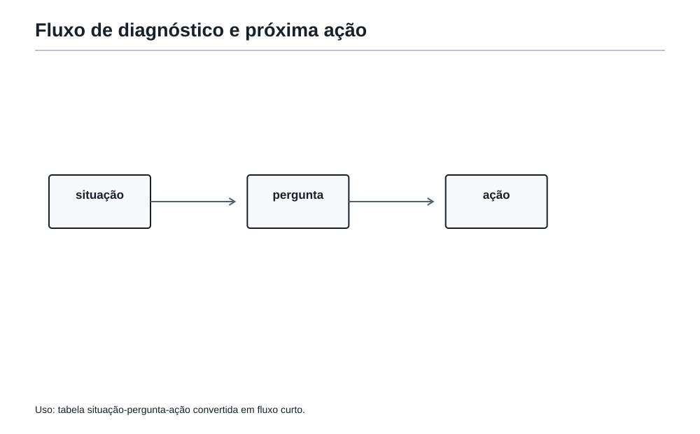

A prova inteira
1. A sala dos simulados
Felipe chegou à sala maior da Academia. Sobre a mesa havia uma prova inteira: vários problemas, alguns curtos, outros com desenhos, outros cheios de palavras. Por um instante, tudo pareceu pedir atenção ao mesmo tempo.
O Professor não entregou uma fórmula de tempo nem apontou a primeira questão.
— Antes de resolver, reconheça o terreno — disse. — Uma prova não é uma lista para cumprir em ordem. É um mapa com portas de abertura diferente.
Até aqui, Felipe aprendeu a escolher a primeira jogada dentro de um problema. Agora ele vai aprender a fazer isso com a prova toda diante dele.
O objetivo de um simulado não é apenas descobrir quantas respostas estão certas. É treinar quatro decisões:
- por onde começar;
- quando insistir e quando deixar uma pista para depois;
- como escrever uma solução que possa ser conferida;
- como aprender com o que ainda não funcionou.
Antes de escolher uma questão, percorra os pedidos finais. A prova inteira também é um dado: ela mostra portas de entrada, relações entre problemas e espaço para retornar.
Faça uma primeira leitura para perceber pedidos, famílias de ideias e pontos de entrada. Ainda não é hora de resolver tudo.
2. A primeira volta: ler sem se prender
Na primeira leitura de uma prova, ninguém precisa entender cada detalhe. Basta conseguir responder a perguntas simples:
- O que cada problema pede no final?
- Que família de ferramenta parece estar por perto?
- Há uma ideia que já começa a aparecer?
- Existe um ponto em que eu sei o que faria primeiro?
Essa leitura não é uma corrida nem um ritual com tempo fixo. Em uma prova real, ela pode durar pouco ou um pouco mais, conforme o tamanho dos enunciados. O importante é não transformar a primeira questão lida na questão que obrigatoriamente deve ser resolvida primeiro.
Felipe criou três marcas mentais para essa primeira volta.
| Marca | O que ela quer dizer | Ação inicial |
|---|---|---|
| Verde | Já vejo uma primeira jogada plausível. | Começar por aqui. |
| Amarela | Reconheço algo, mas ainda falta organizar a ideia. | Voltar depois de uma vitória verde. |
| Vermelha | Ainda não sei por onde entrar. | Deixar descansar, sem apagar da prova. |
As cores não são etiquetas de inteligência nem uma tabela definitiva de dificuldade. Um problema vermelho agora pode ficar amarelo depois de outro problema lembrar uma ferramenta. Um verde pode revelar uma condição esquecida e pedir nova leitura.
Use as marcas verde, amarela e vermelha como estados de trabalho, não como julgamentos. A ordem de ataque pode mudar quando uma nova ideia aparece.
Entre por uma questão que já oferece uma primeira jogada plausível, sem transformar essa escolha numa obrigação de seguir a prova em fila.

3. O primeiro ponto de apoio
Começar por uma questão verde não é fugir das difíceis. É construir um ponto de apoio.
Quando uma primeira solução está bem encaminhada, três coisas melhoram:
- a atenção deixa de ficar presa no susto inicial;
- o caderno já recebe uma solução organizada;
- uma ferramenta lembrada pode ajudar em outro problema.
Mas existe uma diferença entre insistir e explorar.
- Insistir bem é testar uma representação, listar casos pequenos, organizar dados ou voltar à pergunta final.
- Insistir mal é repetir a mesma conta sem obter informação nova.
Se uma tentativa não abriu caminho, ela pode deixar uma pista útil: “já contei os casos que passam por P”, “a paridade parece importante”, “a área total é 96”, “esta condição elimina a última posição”. Essa pista transforma uma pausa em material para a próxima volta.
Resolva o que está vivo, registre uma pista quando travar e retorne aos problemas com olhos renovados. Uma prova se percorre mais de uma vez.
4. Quando uma questão trava
Todo estudante trava. O que muda é o que faz depois disso.
Quando uma questão parecer fechada, a Academia sugere quatro movimentos curtos:
- Volte ao alvo. O que exatamente deve ser encontrado, calculado ou provado?
- Troque a forma. A frase vira tabela? O desenho vira passos? O número grande vira restos?
- Faça um caso pequeno. Ele revela uma regra, uma exceção ou uma impossibilidade?
- Deixe uma seta para depois. Anote uma observação verdadeira e siga para outra questão.
Por exemplo, se um problema fala de caminhos e você ainda não sabe contar todos, talvez já possa escrever: “Os caminhos que passam por P podem ser contados em duas partes”. Essa frase pode ser o começo da solução quando você voltar.
Pausar não é abandonar. Abandonar seria apagar a questão da prova. Pausar é preservar uma pista e escolher uma porta que está mais aberta agora.
Ao parar uma tentativa, deixe registrada uma observação verificável, uma representação ou uma pergunta precisa para a próxima volta.
Antes de voltar à mesma conta, experimente uma representação diferente, um caso pequeno, uma lista organizada ou uma pergunta mais precisa sobre o pedido.
5. Escrever enquanto a ideia está viva
Na Segunda Fase, uma solução não deve existir apenas na cabeça de quem a encontrou. Ela precisa chegar ao papel em uma forma que outra pessoa consiga acompanhar.
O Capítulo 29 apresentou a escada da solução: alvo, ferramenta, caminho e fecho. Em uma prova inteira, ela ganha uma função ainda mais prática: impedir que uma ideia boa se perca enquanto você passa para outra questão.
Uma solução pode seguir estes degraus:
- Alvo: diga o que será obtido ou provado.
- Dados decisivos: separe as informações que realmente entram no raciocínio.
- Ferramenta: mostre a ideia escolhida: tabela, desenho, contagem, resto, caso pequeno ou invariante.
- Desenvolvimento: avance sem saltos que escondam a razão principal.
- Fecho: responda ao pedido e diga por que a conclusão basta.
Isso não significa escrever muito. Significa escrever o necessário para tornar a ideia visível.
Faça aparecer alvo, dados decisivos, ferramenta, desenvolvimento e fecho. Uma solução curta pode ser completa quando a ideia decisiva fica visível.
Compare estas duas versões:
“Deu 7 caixas.”
“O piso tem área
9 × 6 = 54 m². Como cada placa mede1 m², são necessárias 54 placas. Cada caixa contém 8 placas; 6 caixas fornecem apenas 48 placas, então são necessárias 7 caixas. Portanto, devem ser compradas 7 caixas inteiras.”
A segunda resposta mostra a unidade, a necessidade de arredondar para cima e a razão de 6 não bastar.
6. Os cinco olhos da revisão
Antes de encerrar uma questão, a Academia convida Felipe a olhá-la cinco vezes, cada vez procurando uma coisa diferente.
| Olho | Pergunta de revisão |
|---|---|
| Resposta | Eu respondi exatamente o que foi pedido? |
| Justificativa | A ideia decisiva aparece, ou só escrevi o resultado? |
| Unidades | Usei cm², caixas, caminhos, minutos ou outra unidade quando ela importa? |
| Casos esquecidos | Minha lista, contagem ou divisão deixou alguma possibilidade de fora? |
| Coerência | O resultado combina com os dados e com uma estimativa simples? |
Os cinco olhos não exigem que uma questão perfeita vire um texto enorme. Eles evitam erros silenciosos: responder placas quando a pergunta era caixas; contar caminhos que passam pelo ponto proibido; aceitar uma fração de caixa; esquecer que um número deveria ser par.
Confira resposta, justificativa, unidades, casos esquecidos e coerência antes de considerar uma questão encerrada.

7. Mini-simulado guiado — Reconhecer, escolher, voltar
O conjunto seguinte é um mini-simulado original, em estilo OBMEP. Ele não imita uma prova oficial nem impõe uma duração fixa. Seu papel é treinar as voltas de uma prova inteira.
Na primeira leitura, Felipe marcou os problemas assim:
| Problema | Marca inicial | Primeira impressão |
|---|---|---|
| 1 | Verde | Área, divisão e caixas. |
| 2 | Verde | Dois ritmos que se reencontram. |
| 3 | Amarela | Filtros de divisibilidade e restos. |
| 4 | Amarela | Caminhos com um ponto proibido. |
| 5 | Vermelha | Ordem de quatro pessoas com pistas. |
| 6 | Vermelha | Transformações; talvez exista algo que não muda. |
Essa marcação não é a resposta do simulado. É apenas o mapa inicial de Felipe. Agora vamos percorrê-lo.
Problema 1 — As caixas do piso
Uma sala retangular mede 9 m por 6 m. Ela será coberta com placas quadradas de 1 m de lado. As placas são vendidas apenas em caixas com 8 unidades. Quantas caixas inteiras devem ser compradas?
Primeira jogada
A pergunta final fala de caixas, mas primeiro precisamos saber quantas placas são necessárias. A área é uma etapa, não a resposta final.
Ver solução
Solução
A área da sala é:
9 × 6 = 54 m².
Cada placa cobre 1 m², então são necessárias 54 placas.
Se cada caixa tem 8 placas, 6 caixas dão 6 × 8 = 48 placas, que não bastam. Com 7 caixas, há 56 placas.
Resposta: devem ser compradas 7 caixas.
Cinco olhos
- A resposta está em caixas, não em metros quadrados nem em placas.
- A justificativa explica por que não se pode comprar
54 ÷ 8de caixa. - A coerência aparece porque 54 está entre 48 e 56.
Problema 2 — As duas luzes
Às 8h00, duas luzes da Academia piscam juntas. A primeira pisca a cada 4 minutos, e a segunda, a cada 6 minutos. Em que horário elas piscarão juntas novamente pela primeira vez?
Primeira jogada
Há dois ritmos que começam juntos e devem se reencontrar. A porta principal é MMC.
Ver solução
Solução
Os múltiplos de 4 são 4, 8, 12, ... e os de 6 são 6, 12, ....
O primeiro encontro depois do começo acontece após 12 minutos.
Resposta: elas piscarão juntas novamente às 8h12.
Cinco olhos
- O primeiro encontro não é 8 minutos nem 6 minutos: os dois precisam ocorrer no mesmo instante.
- A unidade de tempo foi mantida até o horário final.
Depois de duas soluções verdes, Felipe volta aos amarelos. Agora ele já está menos apressado e o problema 3 parece mais legível.
Problema 3 — O código de dois algarismos
O código de uma porta é um número de dois algarismos entre 40 e 70. Ele é múltiplo de 6 e deixa resto 1 quando dividido por 5. Qual é o código?
Primeira jogada
Não é necessário testar todos os números do intervalo. Começamos com o filtro mais forte: os múltiplos de 6.
Ver solução
Solução
Os múltiplos de 6 entre 40 e 70 são:
42, 48, 54, 60, 66.
Se dividirmos por 5, os restos são, respectivamente:
2, 3, 4, 0, 1.
Apenas 66 deixa resto 1.
Resposta: o código é 66.
Cinco olhos
- A lista inicial contém todos os múltiplos de 6 no intervalo.
- O último filtro foi aplicado a todos eles.
- Portanto, não há outro código possível.
Problema 4 — A rota sem o ponto P
Em uma malha, para ir de A até B pelo caminho mais curto são necessários 2 passos para a direita e 3 passos para cima. O ponto P está a 1 passo para a direita e 1 passo para cima de A. Quantos caminhos mais curtos de A até B não passam por P?
Primeira jogada
O desenho é uma malha, mas a pergunta pede uma quantidade de caminhos. Vamos representar cada caminho como uma sequência de 2 letras D e 3 letras C, em que D significa direita e C significa cima.
Ver solução
Solução
No total, cada caminho tem 5 passos. Basta escolher as 2 posições dos passos para a direita:
C(5,2) = 10 caminhos.
Agora contamos os que passam por P.
De A até P há 1 passo D e 1 passo C, que podem ser feitos em 2 ordens. De P até B faltam 1 passo D e 2 passos C, que podem ser ordenados de 3 maneiras.
Logo, passam por P:
2 × 3 = 6 caminhos.
Os caminhos permitidos são:
10 - 6 = 4.
Resposta: existem 4 caminhos mais curtos que não passam por P.
Cinco olhos
- A subtração é necessária porque a pergunta exclui P.
- Multiplicamos os dois trechos porque, para cada caminho até P, há uma escolha independente de caminho depois de P.
- O resultado 4 é menor que o total 10, como deve ser.

Problema 5 — Os crachás na fila

Ana, Bruno, Caio e Davi ficam em uma fila de quatro lugares, um por lugar. Sabe-se que:
- Davi fica imediatamente depois de Ana.
- Caio não fica nem no primeiro nem no último lugar.
- Bruno fica depois de Caio.
Qual é a ordem da fila, do primeiro ao último lugar?
Segunda volta: como o vermelho virou amarelo
Felipe percebeu que a primeira pista cria um bloco: Ana-Davi. Esse bloco pode começar no primeiro, segundo ou terceiro lugar. A segunda pista impede Caio de ocupar as pontas. Em vez de tentar ordens aleatórias, ele testa os poucos lugares possíveis do bloco.
Ver solução
Solução
Se Ana-Davi começasse no segundo lugar, Caio teria de ficar no primeiro ou no quarto, o que é proibido. Se começasse no terceiro lugar, Caio teria de ficar em segundo e Bruno em primeiro, contrariando a condição de que Bruno fica depois de Caio.
Portanto, Ana-Davi ocupa os dois primeiros lugares.
Caio não pode ser o primeiro nem o último, e os primeiros dois lugares já estão ocupados. Logo, Caio fica em terceiro e Bruno em quarto. Isso também respeita a condição de que Bruno fica depois de Caio.
| Lugar | 1 | 2 | 3 | 4 |
|---|---|---|---|---|
| Estudante | Ana | Davi | Caio | Bruno |
Resposta: a ordem é Ana, Davi, Caio, Bruno.
Cinco olhos
- Todas as três pistas foram verificadas na ordem final.
- O teste dos lugares do bloco mostra por que não existe outra ordem.
Problema 6 — O painel das luzes

Um painel tem 13 luzes acesas. Em cada jogada, devem ser trocadas exatamente 4 luzes: cada luz acesa escolhida apaga, e cada luz apagada escolhida acende. É possível terminar com todas as luzes apagadas?
Segunda volta: procurar o que não muda
O número 13 e a regra “exatamente 4” sugerem observar a paridade da quantidade de luzes acesas.
Ver solução
Solução
Em uma jogada, se k das 4 luzes escolhidas estavam acesas, então 4 - k estavam apagadas. Depois da troca, as k luzes apagam e as 4 - k acendem.
Assim, a quantidade de luzes acesas muda em:
(4 - k) - k = 4 - 2k.
Esse número é sempre par. Portanto, a paridade da quantidade de luzes acesas não muda.
O painel começa com 13 luzes acesas, uma quantidade ímpar. Todas apagadas significaria 0 luzes acesas, uma quantidade par. Isso não pode acontecer.
Resposta: não é possível terminar com todas as luzes apagadas.
Cinco olhos
- Não basta dizer que nenhuma tentativa funcionou; o invariante vale para qualquer sequência de jogadas.
- A conclusão compara uma quantidade inicial ímpar com uma final par, explicando a impossibilidade.
8. Depois da última questão: corrigir para aprender
Uma correção fraca pergunta apenas: “acertei ou errei?”. Uma correção útil pergunta também: “em que decisão a solução começou a se afastar do caminho?”.
Após um simulado, cada problema pode deixar um registro curto na folha de bordo mental ou no caderno:
| Situação encontrada | Pergunta para o diagnóstico | Próxima ação possível |
|---|---|---|
| Não reconheci a família. | Que palavra, estrutura ou pergunta eu não li? | Refazer a leitura e marcar a primeira porta. |
| Escolhi uma ferramenta ruim. | Que teste pequeno teria mostrado isso cedo? | Comparar duas representações. |
| Tive a ideia, mas não terminei. | Onde faltou uma conta, caso ou justificativa? | Completar a escada da solução. |
| Cheguei ao resultado, mas escrevi pouco. | Como provar que não esqueci casos? | Reescrever com alvo, ferramenta, caminho e fecho. |
| Errei uma conta. | A estratégia estava certa? | Corrigir o cálculo sem apagar a ideia válida. |
O erro de cálculo e o erro de estratégia não são a mesma coisa. Uma conta errada pode esconder uma boa escolha. Um resultado certo também pode esconder um caminho que não seria confiável em outro problema. Por isso, a correção precisa olhar a solução inteira.
Registre se a dificuldade foi leitura, escolha de ferramenta, desenvolvimento, escrita, revisão ou cálculo. O próximo treino deve responder a esse diagnóstico.

9. O que uma prova inteira realmente treina
Uma prova inteira não mede apenas conteúdos. Ela também treina calma, leitura, escolha e retorno.
Felipe não precisa sair de cada simulado sabendo tudo. Ele precisa sair sabendo algo mais preciso sobre seu trabalho:
- quais portas reconhece rapidamente;
- quais representações o ajudam;
- onde costuma abandonar cedo demais;
- que tipo de justificativa ainda precisa fortalecer;
- qual ferramenta deve voltar para a Mochila de uso rápido.
O Professor recolheu o mini-simulado e apontou para as cores usadas no começo.
— Viu? — perguntou. — O problema 5 e o problema 6 começaram vermelhos. Eles não foram derrotados por força. Foram visitados de novo, com uma pergunta melhor.
Essa é a diferença entre ficar preso em uma prova e percorrê-la com estratégia.
Oficina10. Oficina Olímpica 11 — Uma prova por voltas
Os desafios abaixo são originais, em estilo OBMEP. Antes de ler as respostas comentadas, faça uma primeira volta: diga qual seria sua cor inicial e qual ferramenta testaria primeiro.
Todos são problemas originais em estilo OBMEP de resposta determinada; as respostas comentadas funcionam como correções de rota, não como modelos a copiar.
Desafio 1 — Verde ou amarelo?
Uma padaria coloca 5 pães em cada saco. Para embalar 43 pães, quantos sacos são necessários no mínimo?
Resposta comentada: 43 ÷ 5 deixa resto 3. Oito sacos guardam apenas 40 pães; são necessários 9 sacos.
Resposta: 9 sacos.
Desafio 2 — O reencontro
Duas fontes lançam água ao mesmo tempo. Uma repete o jato a cada 3 segundos e a outra a cada 5 segundos. Depois de quantos segundos os jatos voltarão a acontecer juntos?
Resposta comentada: o primeiro múltiplo comum de 3 e 5 é 15.
Resposta: 15 segundos.
Desafio 3 — A conta que pede revisão
Uma estudante escreveu que 3/4 de 28 é 21 e concluiu que a parte que falta é 6. Onde está o erro e qual é a parte que falta?
Resposta comentada: 3/4 de 28 é mesmo 21, mas a parte que falta é 28 - 21 = 7, não 6. O olho da coerência também poderia notar que 1/4 de 28 vale 7.
Resposta: o erro está na subtração; faltam 7.
Desafio 4 — O bloco na fila
Lia, Nara e Otávio ficam em uma fila. Nara fica imediatamente antes de Otávio, e Lia não fica em primeiro lugar. Qual é a ordem da fila?
Resposta comentada: o bloco Nara-Otávio não pode ocupar os lugares 2 e 3, pois Lia ficaria em primeiro. Portanto ocupa os lugares 1 e 2, e Lia fica em terceiro.
Resposta: Nara, Otávio, Lia.
Desafio 5 — O retorno inteligente
Você marcou uma questão vermelha porque ela fala de uma figura, de caminhos e de um ponto proibido. Depois de resolver outra questão, percebe que a pergunta final é “quantos caminhos”. Qual é a melhor primeira ação ao voltar?
Resposta comentada: não é começar calculando área. É representar os caminhos como sequências ou contar os caminhos totais e os proibidos. A pergunta final indica contagem como primeira família.
Resposta: escolher uma representação de contagem para os caminhos.
11. As ferramentas da Mochila nesta sala
Nesta sala, a Mochila ganhou ferramentas para percorrer uma prova inteira:
- Ler a prova inteira antes de mergulhar em um problema.
- Fazer o reconhecimento do terreno.
- Classificar problemas como verdes, amarelos ou vermelhos.
- Escolher a ordem de ataque.
- Controlar o tempo por voltas.
- Circular quando uma tentativa não avança.
- Trocar de ferramenta quando travar.
- Escrever soluções em degraus.
- Revisar com cinco olhos: resposta, justificativa, unidades, casos e coerência.
- Transformar o simulado em diagnóstico de treino.
Ao abrir uma prova, Felipe pode começar com este pequeno roteiro:
- Ler os pedidos finais.
- Marcar onde já existe uma primeira jogada.
- Resolver uma porta aberta e escrever a solução enquanto a ideia está viva.
- Voltar aos problemas com uma nova pergunta, não apenas com mais pressa.
- Revisar com os cinco olhos.
- Transformar a correção em próximo treino.
12. Figuras aplicadas no ponto de uso
O mapa da prova, o checklist, a malha, o bloco de fila, o painel de paridade e o fluxo de diagnóstico foram especificados nos momentos em que Felipe precisa usá-los. Não são imagens adicionais de encerramento.
13. Pergunta para amanhã
Felipe já consegue fazer uma prova guiada por voltas. No próximo passo, a Academia vai tirar parte das placas de orientação: menos indicação antes da resolução, mais atenção ao que a própria tentativa revela depois.
Como descobrir, sozinho, o que um simulado está dizendo sobre meu jeito de pensar?
No próximo capítulo, o treino ganha mais autonomia, e o diagnóstico passa a guiar o plano dos dias seguintes.